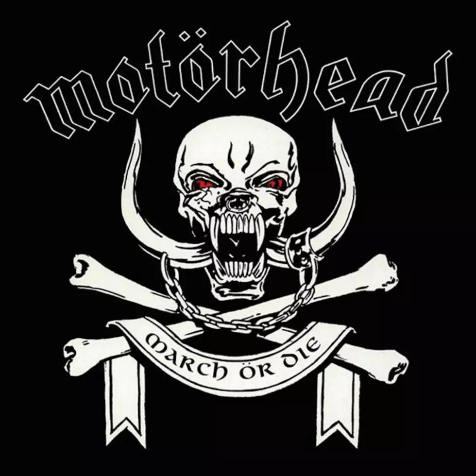
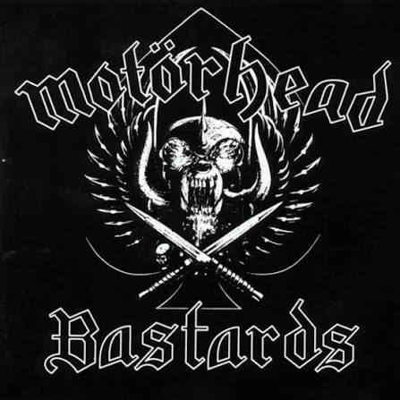

APRENDER ES NESESARIO Y PARA TI............ ES TRABAJAR......
ESCUCHAR TODO MOTORHEAD.............. MALDICION!!!!.. BUENA IDEA!!!
March ör Die es el undécimo álbum de estudio de la banda británica de heavy metal Motörhead, lanzado el 14 de agosto de 1992 a través de Epic Records (y WTG Records)
Detalles principales del disco • Producción: A cargo principalmente de Peter Solley, con la excepción de la canción "Hellraiser", producida por Billy Sherwood. • Bateristas: Hubo varios cambios en la batería durante la grabación. El legendario Phil "Philthy Animal" Taylor fue despedico al inicio y solo toca en "I Ain't No Nice Guy". Tommy Aldridge grabó la mayoría de las canciones, y Mikkey Dee tocó en "Hellraiser" antes de unirse oficialmente a la banda de forma permanente. • Invitados de lujo: El álbum cuenta con colaboraciones estelares como Ozzy Osbourne (en "I Ain't No Nice Guy") y Slash (guitarrista de Guns N' Roses). • Canciones destacadas: • "Stand" (tema de apertura) • "Cat Scratch Fever" (versión del clásico de Ted Nugent) • "Hellraiser" (canción que Lemmy coescribió con Ozzy Osbourne y Zakk Wylde, que también apareció en la película Hellraiser III) • "I Ain't No Nice Guy" (con Ozzy Osbourne y Slash) • "Bad Religion" y "Jack the Ripper"
Recepción Es considerado uno de los trabajos más polémicos o irregulares del grupo. Para algunos seguidores y críticos buscaba demasiado el sonido comercial para el mercado estadounidense, mientras que otros valoran su variedad y las grandes colaboraciones que incluye

APRENDER ES NESESARIO Y PARA TI............ ES TRABAJAR......
ESCUCHAR TODO MOTORHEAD.............. MALDICION!!!!.. BUENA IDEA!!!
Bastards es el duodécimo álbum de estudio de la banda británica de heavy metal Motörhead, publicado el 29 de noviembre de 1993 (en algunos registros el 11 de octubre de 1993) a través del sello ZYX Music
Datos clave del álbum • Formación: Fue el primer disco grabado con la alineación de cuarteto integrada por Lemmy Kilmister (bajo y voz), Phil Campbell (guitarra), Michael "Würzel" Burston (guitarra) y Mikkey Dee (batería), siendo este último su debut oficial en un álbum de estudio de la banda. • Producción: Producido por Howard Benson, marcó un regreso a un sonido más duro, directo y acelerado tras la recepción mixta de sus trabajos anteriores (1916 y March or Die). • Temática: Las letras abordan temas de crítica social, guerra y asuntos personales oscuros (como el abuso infantil en la emotiva "Don't Let Daddy Kiss Me"). Lista de canciones (12 temas) 1. On Your Feet or on Your Knees 2. Burner 3. Death or Glory 4. I Am the Sword 5. Born to Raise Hell (canción destacada que luego se regrabó con Ice-T y Whitfield Crane para la película Airheads) 6. Don't Let Daddy Kiss Me 7. Bad Woman 8. Liar 9. Lost in the Ozone 10. I'm Your Man 11. We Bring the Shake 12. Devils
Recepción Fue altamente positiva por parte de la crítica y de los fans, considerado un regreso triunfal a las raíces crudas, rápidas y pesadas de Motörhead tras el fracaso comercial y las críticas mixtas de su anterior disco, March or Die
